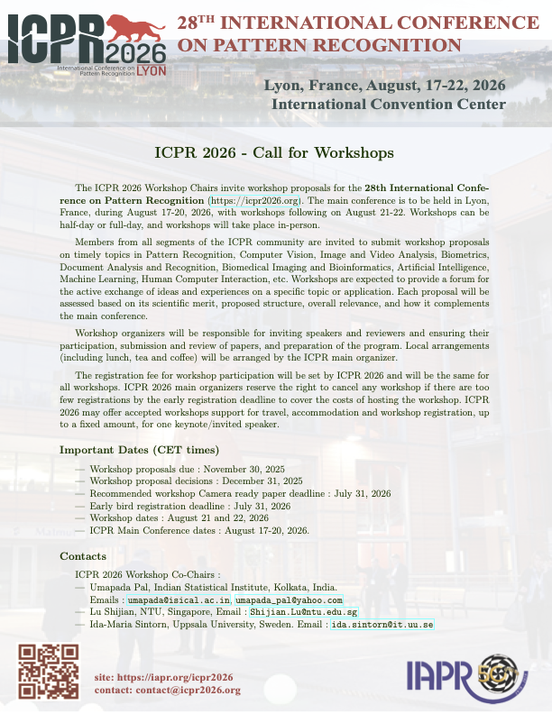

    <div class="row ml-3 mr-1">
      <div class="col-12  text-justify  ">
         <section id="callworkshop">
         <h2>Call for Wokshops</h2>
        <p>
          Members from all segments of the ICPR community are invited to submit workshop proposals on timely topics in Pattern Recognition, Computer Vision, Image and Video Analysis, Biometrics, Document Analysis and Recognition, Biomedical Imaging and Bioinformatics, Artificial Intelligence, Machine Learning, Human Computer Interaction, etc. Workshops are expected to provide a forum for the active exchange of ideas and experiences on a specific topic or application. Each proposal will be assessed based on its scientific merit, proposed structure, overall relevance, and how it complements the main conference
        </p>
        <p>

          Workshop organizers will be responsible for inviting speakers and reviewers and ensuring their participation, submission and review of papers, and preparation of the program. Local arrangements (including lunch, tea and coffee) will be arranged by the ICPR main organizer. 
The registration fee for workshop participation will be set by ICPR 2026 and will be the same for all workshops. ICPR 2026 main organizers reserve the right to cancel any workshop if there are too few registrations by the early registration deadline to cover the costs of hosting the workshop. ICPR 2026 may offer accepted workshops support for travel, accommodation and workshop registration, up to a fixed amount, for one keynote/invited speaker.</p>


<h3>        Important Dates (CET times) </h3>
<ul>
         
<li>Workshop proposals due:  November 30, 2025</li>
<li>Workshop proposal decisions: December 31, 2025</li>
<li>Recommended workshop Camera ready paper deadline:  July 31, 2026</li>
<li>Early bird registration deadline: July 31, 2026</li>
<li>Workshop dates:  August 21 and 22, 2026</li>
<li>ICPR Main Conference dates:  August 17-20, 2026.</li>

</ul>


<h3> Contacts </h3>
ICPR 2026 Workshop Co-Chairs:
<ul>
<li>Umapada Pal, Indian Statistical Institute, Kolkata, India.
Emails: <a href="mailto:umapada@isical.ac.in">umapada@isical.ac.in</a>,<a href="mailto:umapada_pal@yahoo.com"> umapada_pal@yahoo.com</a></li>
<li>	Lu Shijian, NTU, Singapore, Email: <a href="mailto:Shijian.Lu@ntu.edu.sg">Shijian.Lu@ntu.edu.sg</a></li>
<li>	Ida-Maria Sintorn, Uppsala University, Sweden. Email: <a href="mailto:ida.sintorn@it.uu.se">ida.sintorn@it.uu.se</a></li>
</ul>


<h3>Guideline for Submitting Proposals </h3>

        <p> Workshop proposals must be submitted via the ICPR workshop application form available <a href="https://iapr.org/conferences/international-conference-on-pattern-recognition/icpr-workshop-application-form/"> here </a>  </p>


          All workshop proposals will be reviewed by the IAPR Conferences and Meetings Committee and the ICPR workshop chairs. Peer-reviewed papers of approved workshops can be published in Lecture Notes in Computer Science (LNCS), Springer. However, a workshop organizer may publish their proceeding in a different avenue. The ICPR main conference is responsible for any fees owed to IAPR for ICPR Workshops.

<h3>Flyers of Call for Workshops </h3>
         The main flyer of the call for papers is available here:

<div class="text-center">
  <a href="files/callForWorkshops_icpr2026.pdf">
    <picture class="flyer-container">
      <!-- Version WebP -->
      <source srcset="Images/flyerCallForWorkshop.webp" type="image/webp">
      <!-- Fallback PNG -->
      
    </picture>
  </a>
</div>

</section>

    

</div>

      </div>
    </div>

